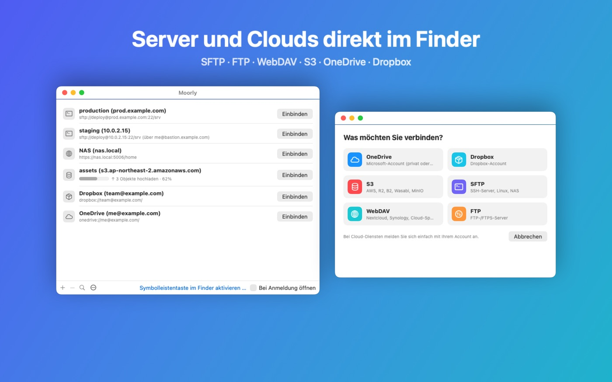
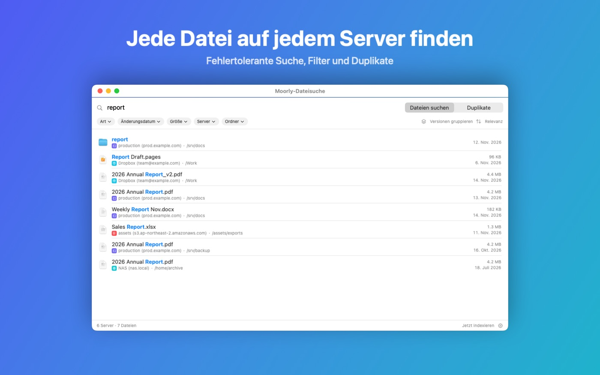
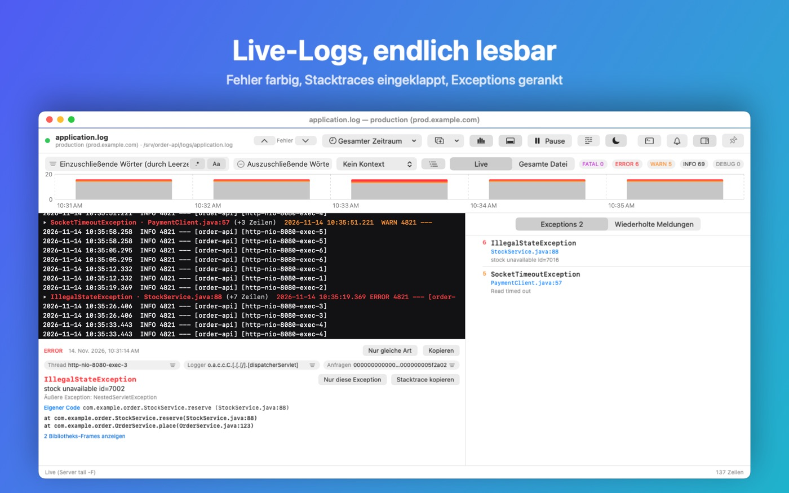

Moorly – Benutzerhandbuch
Moorly zeigt SFTP-, FTP-, WebDAV- und S3-Server sowie OneDrive und Dropbox in der Seitenleiste des Finder an, sodass Sie Dateien öffnen und sichern können, als lägen sie auf Ihrem Mac. Moorly kann auch mit Ordnern arbeiten, die sich bereits auf Ihrem Mac befinden, zum Beispiel iCloud Drive oder der Ordner der Google Drive-App.
Erste Schritte

- Klicken Sie in der Menüleiste auf das Moorly-Symbol und öffnen Sie Verbindungen.
- Klicken Sie auf + (⌘N) und wählen Sie einen Dienst aus.
- Server (SFTP, FTP, WebDAV, S3): Geben Sie die Adresse, den Benutzernamen und das Passwort oder den Schlüssel ein und klicken Sie dann auf Verbindung testen und sichern.
Cloud-Dienste (OneDrive, Dropbox): Klicken Sie auf Mit Microsoft (bzw. Dropbox) anmelden …. Die Anmeldeseite wird in Ihrem Browser geöffnet. Nachdem Sie sich angemeldet und den Zugriff erlaubt haben, klicken Sie auf Öffnen, wenn der Browser fragt, ob Moorly geöffnet werden soll. Überprüfen Sie dann den Namen und klicken Sie auf Sichern. - Klicken Sie in der Liste auf Einbinden. Die Verbindung wird in der Seitenleiste des Finder unter Orte angezeigt.
~/.ssh/config auf einmal zu übernehmen. SFTP-Server werden beim ersten Aktivieren geprüft.Tipps für SFTP
- Mit Aus ~/.ssh/config importieren … können Sie Ihre vorhandenen Host-Einstellungen übernehmen.
- Wenn die Verbindung über einen Sprunghost laufen muss, geben Sie ihn unter Erweitert › Sprunghost ein.
- Wenn Sie das Stammverzeichnis des Servers (
/) einbinden, werden/procund/sysausgeblendet (dies sind virtuelle Ordner, die sich ständig ändern).
Bereich in der Menüleiste
Klicken Sie in der Menüleiste auf das Moorly-Symbol, um den Bereich zu öffnen. (Mit gedrückter Taste „ctrl“ oder ⌥ klicken öffnet das klassische Menü.)
- Server: Der Punkt am Symbol zeigt den Status an – grün eingebunden, orange ein Problem, grau nicht eingebunden. Klicken Sie auf eine Zeile, um den zuletzt angezeigten Ordner zu öffnen. Unter … finden Sie „Auswerfen“, „Aktualisieren“, „Speicherbelegung analysieren“, „In Terminal öffnen“ und mehr.
- Ordner: Für jeden Server ★ Favoriten · 🔥 Häufig · 🕘 Zuletzt. Bewegen Sie den Zeiger auf einen Ordner und klicken Sie auf ☆, um ihn zu den Favoriten hinzuzufügen oder daraus zu entfernen.
- Häufig listet Ordner auf, die Sie in den letzten 30 Tagen mindestens zweimal geöffnet haben – die am häufigsten geöffneten zuerst. Wie viele pro Server angezeigt werden, legen Sie unter Einstellungen › Menü fest.
- Von Moorly geöffnete Ordner behalten ihren Verlauf, sodass Sie mit ◀ (Zurück) und ⌘↑ im Finder zum übergeordneten Ordner gelangen.
- Übertragungen: Klicke oben im Bereich auf ⇅ (oder im Kontextmenü auf Übertragungen …), um Up- und Downloads mit Fortschritt, Fehlergrund, Erneut versuchen und Anhalten pro Server zu sehen.
- Ordner-Synchronisierung: Über das …-Menü eines Servers oder Ordner-Synchronisierung … im Kontextmenü vergleichst du einen Mac-Ordner mit einem Serverordner und überträgst nur Geändertes. Vergleichen zeigt zuerst eine Vorschau; auf der Zielseite separat geänderte Dateien werden als Konflikt gemeldet statt überschrieben. Klicke im Finder bei gedrückter Ctrl-Taste auf einen Ordner eines eingebundenen Servers › Moorly: Diesen Ordner synchronisieren …, um sie mit ausgefülltem Server und Serverordner zu öffnen – du wählst nur noch den Mac-Ordner. Auch über die Taste Synchronisieren unten im Panel.
Viele Server: Baum und Tabs
Unter Einstellungen › Menüleisten-Bereich › Darstellung wählst du Liste, Baum oder Tabs.
- Gruppen: Lege eine Gruppe (z. B. Produktion oder Entwicklung) im Feld Gruppe des Verbindungseditors oder über … › Gruppe beim Server fest. Server ohne Gruppe werden automatisch unter Server (SFTP, FTP, WebDAV) und Cloud (S3, OneDrive, Dropbox) zusammengefasst; lokale Ordner bilden eine eigene Gruppe.
- Baum: Gruppen und Server mit ▸ ein- und ausklappen. Klappst du einen Server auf, erscheinen direkt darunter seine Favoriten sowie häufig und zuletzt verwendete Ordner. Der Zustand bleibt erhalten.
- Tabs: Klicke oben auf einen Tab (Alle oder eine Gruppe), um nur deren Server und Ordner zu sehen.
- Ab 9 Servern und lokalen Ordnern erscheint oben das Feld Nach Servername filtern. Ist die Liste höher als der Bildschirm, scrollt sie im Bereich.
Hochladen per Drag & Drop
Wenn Sie im Finder eine Datei bewegen, erscheint unter dem Symbol in der Menüleiste ein kleiner Bereich „Mit Moorly hochladen“. Ziehen Sie die Datei darauf, um die Ordner jedes Servers anzuzeigen.
- Auf einem Ordner ablegen, um die Datei dorthin hochzuladen. Ist bereits eine Datei mit demselben Namen vorhanden, behält Moorly beide („Name 2“).
- Auf dem Titel eines Servers ablegen, um den Upload-Ort auszuwählen.
- Damit sofort die vollständige Liste angezeigt wird, ändern Sie Einstellungen › Drop-Bereich › Stil.
Lokale Ordner (iCloud Drive · Google Drive · Box · freigegebene Ordner)
Arbeiten Sie mit Ordnern, die sich bereits auf Ihrem Mac befinden, als wären es Server. Sie erscheinen unter „Zuletzt“, „Häufig“ und „Favoriten“, nehmen abgelegte Dateien an und werden in die Dateisuche einbezogen.
- Klicken Sie auf Einstellungen › Lokale Ordner › Ordner hinzufügen …
- Wählen Sie den Ordner aus und klicken Sie auf Diesen Ordner hinzufügen. (Aus Sicherheitsgründen verlangt macOS, dass Sie jeden Ordner einmal selbst auswählen.)
| Hinzufügen | Auswahl |
|---|---|
| iCloud Drive | Die Taste iCloud Drive hinzufügen … (oder ~/Library/Mobile Documents/com~apple~CloudDocs) |
| Google Drive | Installieren Sie die Google Drive-App und wählen Sie dann ~/Library/CloudStorage/GoogleDrive-Ihr-Account |
| Box · pCloud · MEGA | Installieren Sie die App und wählen Sie dann den von ihr erstellten Ordner (meist in ~/Library/CloudStorage) |
| Freigegebener Ordner im Unternehmen (SMB) | Stellen Sie im Finder über Gehe zu › Mit Server verbinden eine Verbindung her und wählen Sie dann /Volumes/Freigabename |
Kontextmenü im Finder
Klicken Sie bei gedrückter Taste „ctrl“ auf eine Datei oder einen Ordner auf einem mit Moorly eingebundenen Server, um die Objekte Moorly: anzuzeigen.
| Objekt | Auswahl | Funktion |
|---|---|---|
| Live-Log anzeigen | 1 Datei | Das Log auf dem Server verfolgen, wie mit tail -F |
| Gleiche Datei suchen | 1 Datei | Dateien mit identischem Inhalt auf Ihren Servern finden |
| Im Terminal öffnen | 1 Objekt | Eine ssh-Sitzung in diesem Ordner (SFTP) |
| Speicherbelegung analysieren | 1 Ordner | Anzeigen, welche Ordner und Dateien Speicherplatz belegen |
| Zu Favoriten hinzufügen | 1 Ordner | Zu ★ im Bereich in der Menüleiste hinzufügen |
| Freigabelink kopieren | 1 Objekt | Ein Freigabelink für S3, OneDrive oder Dropbox |
| Auf dem Server als tar.gz/zip komprimieren, Auf dem Server entpacken, Auf dem Server duplizieren | 1 oder mehr | Wird auf dem Server ausgeführt, ohne Download (SFTP) |
| Immer auf diesem Mac behalten / Nicht mehr behalten | 1 oder mehr | Lädt vorab und hält Änderungen vom Server aktuell, sodass sich die Objekte auch ohne Serververbindung öffnen lassen. Bei einem Ordner gilt das für den ganzen Inhalt |
Ist eine Aktion für den Servertyp nicht verfügbar, teilt Moorly Ihnen den Grund mit.
Cryptomator-Tresore (verschlüsselte Ordner)
Dateien werden auf diesem Mac verschlüsselt, bevor sie hochgeladen werden. Auf dem Server liegen nur unlesbare Namen und Inhalte – weder dein Cloud-Anbieter noch der Server-Admin noch jemand, der dein Konto stiehlt, kann sie lesen. Tresore nutzen das Standard-Cryptomator-Format, daher können auch die Cryptomator-Apps (Windows, iPhone, Android) denselben Tresor öffnen.
- Klicke im Panel neben einem Server auf … › Cryptomator-Tresor … (oder im Verbindungsfenster auf … › Cryptomator-Tresor öffnen oder erstellen …).
- Vorhandenen Tresor öffnen: Tresorordner (mit
vault.cryptomator) und Passwort eingeben. Neuen Tresor erstellen: Ordner und ein Passwort mit mindestens 8 Zeichen eingeben. - Der Tresor erscheint im Finder als eigene Verbindung – mit 🔒 in der Seitenleiste und einem Schloss auf Ordner- und Dateisymbolen, damit du ihn erkennst. Darin öffnest und sicherst du Dateien wie in jedem Ordner.
- Verborgen werden Namen und Inhalte. Anzahl der Dateien, ungefähre Größen und Änderungszeiten bleiben auf dem Server sichtbar.
- Serverseitiges Komprimieren, Freigabelinks und Live-Logs gibt es im Tresor nicht (der Server kann die Dateien nicht lesen).
- Unterstützt: Cryptomator-Tresorformate 7 und 8 mit AES-GCM (Standard seit Cryptomator 1.7) oder AES-CTR+HMAC (ältere Tresore). Mit älteren Cryptomator-Versionen erstellte Tresore funktionieren unverändert.
- Sperren: im Panel beim Tresor auf … › Tresor sperren. Er wird ausgehängt und sein Schlüssel von diesem Mac entfernt; beim nächsten Öffnen wird nach dem Passwort gefragt. Unter Einstellungen › Cryptomator-Tresor kannst du Tresore automatisch sperren, wenn der Bildschirm gesperrt wird oder der Mac in den Ruhezustand wechselt.
- Täglich erneut bestätigen: Wähle beim Tresor … › Erneut öffnen › Täglich sperren, mit Touch ID entsperren. Er wird einen Tag nach dem Entsperren gesperrt und lässt sich danach per Fingerabdruck öffnen. Macs ohne Touch ID verwenden das Mac-Anmeldepasswort (oder die Apple Watch). Mit mit Tresor-Passwort entsperren wird jedes Mal nach dem Tresor-Passwort gefragt.
- Passwort ändern: … › Tresor-Passwort ändern …. Dateien werden nicht neu verschlüsselt (nur die Tresor-Schlüsseldatei ändert sich), daher geht es sofort. Auch die Cryptomator-Apps verwenden dann das neue Passwort.
- Wiederherstellungsschlüssel: wird beim Erstellen eines Tresors angezeigt (später: … › Wiederherstellungsschlüssel anzeigen …). Hast du das Passwort vergessen, wähle in Tresor-Passwort ändern … den Wiederherstellungsschlüssel und lege ein neues fest. Es ist ein Moorly-Schlüssel, anders als der Wort-Schlüssel der Cryptomator-Apps.
Dateisuche

Klicken Sie im Bereich in der Menüleiste auf 🔍 oder drücken Sie überall ⌃⌥⌘F. Dateien werden anhand ihres Namens gefunden – auch in Ordnern, die Sie noch nicht geöffnet haben.
- Leerzeichen und Tippfehler werden toleriert.
- Filtern Sie mit Alle / Dateien / Ordner unter dem Suchfeld sowie nach Art, Datum, Größe oder Ordner.
- Bedingungen:
ext:pdfsize:>100mbkind:folderfolder:/var/logserver:proddate:week - Der Tab Duplikate findet dieselbe Datei auf mehreren Servern.
- Aktivieren Sie 📌 oben rechts, damit das Fenster vor anderen Apps bleibt.
- Was pro Server indexiert wird, legen Sie unter Einstellungen › Dateien suchen fest. Bei SFTP und FTP werden Systemordner wie
/usr,/procund/var/logübersprungen.
Live-Logs

Bereich in der Menüleiste › Live-Log › Logdatei öffnen … oder bei gedrückter Taste „ctrl“ auf eine Datei klicken › Moorly: Live-Log anzeigen.
- Pfad oder Name: Geben Sie einen Pfad wie
/var/log/syslogein oder nur einen Namen wieappund wählen Sie dann aus der Liste darunter aus (zuletzt geänderte zuerst). - Geben Sie einen Ordner ein, um der zuletzt geänderten Datei darin und in seinen Unterordnern zu folgen. Erscheint eine neuere Datei (zum Beispiel ein neues Tageslog), wechselt Moorly innerhalb von 30 Sekunden dorthin. Sie können einen Namen ergänzen:
/app/log/*api* - Wählen Sie mehrere Server aus, um ihre Logs chronologisch zusammenzuführen.
- Filter, ausgeschlossene Wörter, Kontextzeilen, Farben nach Level, gruppierte wiederholte Meldungen, ein Zeitachsendiagramm, Pause (⌘P), Dunkelmodus 🌙 und Im Vordergrund halten 📌.
- 🔔 Überwachung: Erhalten Sie eine macOS-Mitteilung bei bestimmten Wörtern oder gehäuften Fehlern (funktioniert auch nach dem Schließen des Fensters weiter).
tail -F auf dem Server, sodass neue Zeilen fast sofort erscheinen. Bei Accounts, die keine Befehle ausführen dürfen, und bei anderen Servertypen liest Moorly alle 1,5 Sekunden neue Daten.Terminal (iTerm2 · Terminal)
- Klicken Sie in der Verbindungsliste bei gedrückter Taste „ctrl“ auf einen SFTP-Server › In iTerm2 öffnen (oder … im Bereich). Die App wählen Sie unter Einstellungen › Terminal aus.
- Anmeldung ohne Passwort einrichten … erstellt einen SSH-Schlüssel für diesen Mac (standardmäßig
~/.ssh/moorly_ed25519) und fügt eine Zeile mit dem öffentlichen Schlüssel zu~/.ssh/authorized_keysauf dem Server hinzu. Danach fragt das Terminal nicht mehr nach einem Passwort.
Berechtigungen – warum fragt macOS?
| Was macOS fragt | Grund |
|---|---|
| „Moorly möchte Finder steuern“ | Um zuletzt und häufig benutzte Ordner zu erfassen, prüft Moorly, welchen Ordner das vorderste Finder-Fenster anzeigt – nur, solange der Finder im Vordergrund ist, und ohne jemals Ihre Dateien zu verändern. Deaktivieren: Einstellungen › Menü › Im Finder geöffnete Ordner erfassen |
| „Moorly möchte iTerm2 (Terminal) steuern“ | Um einen ssh-Befehl zu senden, wenn Sie einen Server im Terminal öffnen. |
| Eine Ordnerauswahl | Sie legen genau fest, welche Ordner Moorly verwenden darf, etwa lokale Ordner oder den Speicherort eines SSH-Schlüssels. |
| Mitteilungen | Hinweise der Log-Überwachung. |
Wenn Sie abgelehnt haben, ändern Sie dies unter Systemeinstellungen › Datenschutz & Sicherheit › Automation.
Gratis und Pro
Die Gratisversion enthält alle Funktionen mit je einer Verbindung pro Typ (SFTP, FTP, WebDAV, S3, OneDrive, Dropbox), einem lokalen Ordner, einer Log-Überwachung und einem Cryptomator-Tresor. Ein einmaliger In-App-Kauf von Moorly Pro hebt diese Beschränkungen auf: unbegrenzt viele Verbindungen, lokale Ordner, Log-Überwachungen und Tresore.
Häufige Fragen
Beim Sichern einer OneDrive-Verbindung erscheint „Dieser Account hat kein OneDrive“
Mit dem privaten Account wurde OneDrive noch nie geöffnet. Melden Sie sich einmal im Browser unter onedrive.live.com an und versuchen Sie es dann erneut. Geschäfts- oder Schul-Accounts benötigen eine Lizenz für OneDrive (Microsoft 365).
Ein Server erscheint nicht in der Finder-Seitenleiste
Klicke im Panel neben dem Server auf … › In Finder-Seitenleiste anzeigen …. Wähle im geöffneten Finder-Fenster, ohne etwas auszuwählen, Ablage › Zur Seitenleiste hinzufügen. Danach bleibt der Eintrag auch nach erneutem Einbinden erhalten. (Entfernst du einen Eintrag aus der Seitenleiste, merkt sich der Finder das und zeigt ihn nicht wieder an.)
Mein geschäftlicher Microsoft-Account wird blockiert („Administratorgenehmigung erforderlich“)
Ihre Organisation blockiert externe Apps. Bitten Sie Ihre Administratorin oder Ihren Administrator, Moorly zu genehmigen.
In der Liste erscheint eine Warnung (⚠︎)
Der Server war nicht erreichbar oder Ihre Anmeldung ist abgelaufen. Wählen Sie im Bereich … › Erneut versuchen oder klicken Sie auf die Warnung, um sich erneut anzumelden.
Im Finder geöffnete Ordner erscheinen nicht unter „Zuletzt“
Stellen Sie sicher, dass die Steuerung des Finder erlaubt ist (siehe Berechtigungen). Zeigt der Bereich einen orangefarbenen Hinweis an, klicken Sie auf Automation-Einstellungen öffnen ….
Im Kontextmenü gibt es keine Moorly-Objekte
Sie erscheinen nur auf Servern, die mit Moorly eingebunden sind, nicht in lokalen Ordnern wie iCloud Drive.
SFTP über einen Sprunghost schlägt fehl
Der sshd des Sprunghosts muss TCP-Weiterleitung erlauben (AllowTcpForwarding yes, die Standardeinstellung). Geben Sie als Host die Adresse ein, wie sie vom Sprunghost aus erreichbar ist.
Ich erhalte keine Mitteilungen der Log-Überwachung
Erlauben Sie Mitteilungen unter Systemeinstellungen › Mitteilungen › Moorly.
Kontakt
Schreiben Sie eine E-Mail an giveing7777@gmail.com oder erstellen Sie einen Eintrag unter GitHub Issues und geben Sie dabei Ihre macOS-Version an und beschreiben Sie, was passiert ist. Bitte geben Sie keine Passwörter oder Serveradressen an.